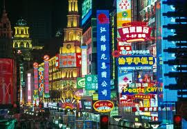

Itinerary
This CUNY-BC China program is designed in such a way that all travel is education-related, with an academic focus on the courses we teach at real sites in China. The cities we have chosen to visit are all sites of historic and cultural importance.
Our program will be visiting five famous Chinese cities, with hotel stay and significant activities in four cities of Beijing, Xi’an, Nanjing and Shanghai. We will try our best, with assistance from friends and travel agencies in China, to plan visits to college campues, as long as our requests do not conflict with their final exam schedules. In each of these four major cities, our program participants will visit one university to interact with Chinese students (English majors, or those who can speak good English) and promote Brooklyn College & CUNY.
Before each campus visit, we will ask our students, and also students at the Chinese institutions, to prepare questions/topics related to what they are studying, about Chinese and American cultures, about the two countries in general, and about what they have observed on the trip (and elsewhere); such that, they can have productive conversation on meaningful topics, and make friends from such exchanges.
Tentatively, the Chinese universities to be visited in the four cities may include:
--Beijing: North China University of Technology, or Communication University of China
--Xi`an International University; or, Northwestern Polytechnical University; or Northwestern University
--Nanjing Normal University, or Nanjing University, or Nanjing University of Science and Technology
--Shanghai University of International Studies; or Fudan University; or East China Normal University
The itinerary includes the following five famous cities:
Beijing (3 days)
Xi’an (2 days)
Nanjing (about two weeks)
Suzhou (1 day)
Shanghai (3 days)
Part I: Beijing
We depart from New York (at the end of May in summer, or right after Christmas in winter) and arrive in Beijing on the afternoon of the next day.
Beijing was the capital of several late Chinese dynasties. It is the current capital of China, and the country’s political, cultural and economic center. Many sites in Beijing (e.g., Tiananmen Square, Palace Museum, Forbidden City, the Great Wall, Summer Palace, and the Olympic Stadium) are directly related to what we are teaching in courses on history, culture and Chinese business & economy. Our visit to traditional Chinese medicine exhibition center Tongrentang helps students to learn about aspects of traditional Chinese medicine (TCM) and the yin & yang theory in health care (that also comes from Taoist philosophy).


We stop in Beijing for 3 days.
Some sites and activities students enjoy in Beijing include the following:
1.Tiananmen Square
2.The Palace Museum and Forbidden City
3.Cloisonné Exhibition Center/Golden Palace
4.The Great Wall
5.Traditional Chinese medicine center
6.Venues of the 2008 Olympic Games
7.Peking duck dinner
8.Wangfujing /Business Center


We can also try to schedule a kung-fu show or Peking Opera show (as an option for an extra fee of about $30).* Watching the kung-fu show, you will come to know that kung-fu also has much to do with Buddhism, and that can be a discussion topic in our course on Silk Road and Classical Chinese Culture.
Check the following
kungfubranson
youtube: Ticket Booking of Kung Fu Show at Beijing Red Theatre
youtube: Chun Yi: The Legend Of Kung Fu
Part II: Xi’an
After Beijing, we proceed to Xi'an and stay there for 2 days.
Xi’an was where Chinese dynasties started several thousand years ago and many subsequent emperors established their capitals. As the starting point of the ancient Silk Road, it was visited by Marco Polo. Here, our students can experience a lot of the Chinese history and see evidence of west-east exchanges.
The Terracotta Soldiers and Horses of the Qin Dynasty amazed the world when discovered in 1974 by local farmers. Buried with the first emperor of the Qin Dynasty 2,000 years ago and meant to protect him in the afterlife, the 8,000 life-sized warriors and their steeds are a magnificent sight. The well-preserved old city wall and gate towers, and the stunning Great Wild Goose Pagoda are must-see attractions.


Sites that strongly support the academic content of our courses are the Terra Cotta Museum, Qin Shihuangdi Emperor’s Mausoleum, Wild Good Pagoda Buddhist Temple & Square, Xuanzang Buddhist Statue, the Silk Road Site, Tang Dynasty Art Museum (where students can appreciate rich Chinese art tradition, learn about different styles/schools of Chinese painting, and practice Chinese calligraphy with paper and ink), Muslim Quarter, and the Great Mosque (to understand the Islamization of the Silk Road and learn about China’s ethnic diversity and policies regarding religions and ethnic minorities).


Some sites students enjoy in Xi'an include:
1.Terra Cotta Warriors Museum
2.Qin Emperor’s Mausoleum
3.Wild Goose Pagoda Square & Xuzang Senior Monk Statue
4.Ancient City Wall
5.Jade Exhibition
6.The Muslim Quarter
7.The Great Mosque
8.Shaanxi Province History Museum
9.Drum Tower & Bell Tower
10.Tang Dynasty Art Museum
Part III: Nanjing
After Xi'an, we arrive in Nanjing, where we stay for two weeks to have our formal class sessions. (Classes sessions also start in some other ways the first day when we arrive in China.)
Nanjing was the capital of six ancient Chinese dynasties. Ming Dynasty first established its capital here and then moved to Beijing. The Maritime Silk Road started here from the Yangtze River and went to the ocean before it reached other parts of Asia and Europe.
And it was the capital of the first Republic of China in 1912—a place of great significance in modern Chinese history. At the beginning of the 20th Century, the Nationalists (Kuomingtang) chose the city as its capital for the first Republic which lasted until 1949 when the Communists gained control of China.
Nanjing is only one-hour to Yangzhou, a famous city of historical culture with museums for several important schools of Chinese classical painting (we will make one day trip there while studying in Nanjing).
Therefore, Nanjing is the perfect choice as the main venue for our Study in China Program. Nanjing Museum, Confucius Temple, Jiming Buddhist Temple, and many other cultural and historic sites in Nanjing add immense leverage to the content of the courses we teach. It is one thing to read Confucius in a classroom in New York, but it is an entirely different thing to visit the Confucius Temple and Yuan Emperor’s Tomb where Confucian rituals are practiced.
The city’s convenient railway & expressway systems and a major international airport offer easy access to any part of China. Students will have a lot to discover, study, and enjoy in this city.


Important sites you can visit include:
1.Xuanwuhu Park
2.Confucius Temple
3.Jiming Temple (nunnery)
4.Nanjing Museum
5.Ming Dynasty City Wall
6.The Mausoleum of Dr. Sun Zhongshan
7.Taiping Heavenly Kingdom Museum
8.Nanjing Massacre Museum
9.Presidential Palace
While in Nanjing, students can make side trips to Hong Kong (via Shenzhen, right next to Hong Kong); Sanya; Guilin; etc. For information on side trips, see the bottom of this page.
Yangzhou is a very pretty city, only one hour north of Nanjing. During Tang Dynasty, Yangzhou was very prosperous, comparable to modern NYC or Shanghai. During our stay in Nanjing, we can choose to make a one-day trip to Yangzhou.
The trip may include the following sites and activities:
1.Slender West Lake (shou xi hu)
2.Slender West Lake (shou xi hu)
3.Yangzhou Lacquer ware
4.The Grand Canal
5.Yangzhou Museum & China Block Printing Museum
Marco Polo Museum (Marco Polo served as governor in Yangzhou for 3 years during Yuan Dynasty)
Part IV: Suzhou
After Nanjing, the travel agency takes us on a chartered bus to Suzhou (about 2 & 1/2 hours away from Nanjing).
Suzhou is considered the king of gardens in China. It is also acclaimed as the Oriental Venice. The exquisite gardens of southern China style will help our students understand many classical poems by great Chinese scholars that we teach about in the Core course on the Chinese classic literature. The rivers, bridges and streets in the old town area will enable students to see the Chinese tradition and life styles of several hundred years ago, and the imposing architecture in the new development zone around the beautiful lakes will open our students’ eyes to China’s on-going amazing modernizations.


Sites in Suzhou include:
1.Suzhou #1 Silk Mill (learn about entire process of silk, from silkworm to final silk fabric weaving and designs, silk art & artifacts, etc.)
2.Classical Chinese Garden/Jinji Lake Scenic Zone
Note: In the summer, toward the end of our stay in Nanjing, we often choose to make a side trip to the Yellow Mountain. If all participants are going on that side trip to Yellow Mountina, then we may decide to head to Hangzhou (rather than to Suzhou; we will skip Suzhou), and go from Hangzhou to Shanghai. In Hangzhou, we can learn about the history and art of southern Song dynasty and enjoy the beautiful West Lake (Xi Hu), the Longjing (Dragon Well) Tea Plantation, etc.
The city of Hangzhou is one of China’s premier tourist destinations, and a favorite weekend retreat for people from Shanghai and other nearby cities. If you know the Chinese history, this city was the capital of the southern Song dynasty (1127-1279) which prospered in art and literature, so this charming city has been the inspiration for poets and artists for centuries. No pictures online can convey the charm and beauty of Hangzhou, especially its West Lake (Xi Hu in Chinese), except a trip in person to see it with your own eyes. This is the city where former US ambassador John Leighton Stuart chose to have his ashes placed.
After lunch, take a walk by the picturesque West Lake, which is said to be created from a pearl dropped by a phoenix and a dragon, and proclaimed by the Chinese to be "the landscape composed by a painter." Stroll along the lake’s causeways and immerse yourself in its beauty. You also visit the famed “Broken Bridge” to marvel at the Golden Fishes. Later, if time permits, you can tour the "Old Street” with Ming & Qing houses and stone cobbled lanes.
Besides silk, the region is also a major producer of tea. No tour to Hangzhou is complete without going to the world-renowned Longjing Tea Plantation, where the legendary Longjing green tea is picked and processed by hand. The first picked tea leaves of the new harvest (in early spring) were once reserved solely for the Emperor and transported to him via the Grand Canal. You will learn about the harvesting, as well as the proper way to brew this healthful beverage. The Chinese Tea Ceremony will be demonstrated. Sample the freshness of the tea, appreciate its “green color, smooth appearance, fragrant aroma and ever-lingering taste,” and you will find it hard to resist the temptation to take home some tea for your loved ones and for yourself.


Part V: Shanghai
The final excursion takes us to Shanghai on a chartered bus.
Shanghai is our final stop: Foreign concessions are painful memories for the Chinese. Now, it is the symbol of China’s modernizations. Our students will see the modern developments of a new China, visit sites of cultural significance, including Pudong financial district surrounded by views of this cutting-edge 21st-century metropolis with amazing futuristic architecture. The massive Shanghai Museum in the center of the city is a meaningful final addition to the classroom. Many of the things we see and do in this city are related to our courses on Chinese history, culture, economy and business.
Students will be given time to explore on their own and see the best of the modern China.


Activities students can have in Shanghai may include:
1.Pudong Financial District
2.The Bund & the French Concession
3.Commercial streets (Nanjing Road & Huai Hai Road)
4.Oriental Pearl TV Tower
5.Jewish Synagogue & Refugee Center (to see some history of Jewish communities in Shanghai during World War II)
6.Xin Tian Di (New World Market)
7.Shanghai Museum
8.YuYuan Garden Flea Market


These carefully chosen sites will offer CUNY study abroad students excellent opportunities to learn about China’s present and past, experience Chinese culture, society and economy, interact with Chinese people, and improve their Chinese language skills.
We must also note: when students travel around in the cities and interact with people from different walks of life in China, they are also experiencing the Chinese culture in real life, and practice their Chinese language skills at any level. Their experiences, stories and daily journals will be important supplement to what they read in the textbooks.


Part VI: Other Activities
While studying in Nanjing, we will try to pair up with local college students and business professionals.
If students are interested, we can also plan additional activities which may include visits to schools, government offices, non-government organizations, classes to learn Taiji or Chinese calligraphy, or concerts of traditional Chinese musical instruments such as Erhu (Chinese violin) or Chinese regional operas.
With this China program, you will experience and learn about Chinese history & culture, interact with local people, and have a real feel of the Chinese life.
Travel and sightseeing in China are all arranged by professional travel agencies, so you do not have anything to worry about. In each city, they English-speaking tour guides and chartered buses to pick up our group at the airport/train station and take us to the hotel, restaurants and tourist sites.
Travel agencies also help arrange side trips to the following places:*
Hong Kong;
Sanya on Hainan Island (said to be the oriental Hawaii)
Yellow Mountain (or Huangshan in Chinese, acclaimed to be the most beautiful mountain)
Guilin & Yangshuo (scenery is said to be #1)

Tourists, Chinese and non-Chinese alike, all dream to see the stunning landscape of Guilin and the breathtaking beauty of the Li River (Li Jiang). Travel agencies can help arrange a side trip to this beautiful place if there is sufficient interest.
Make sure you check the tab of Side Trips
Students in the past found the side trips to be additional excitements of our China trip. Information on side trips will be provided to participants after they are accepted into the program.
*additional cost